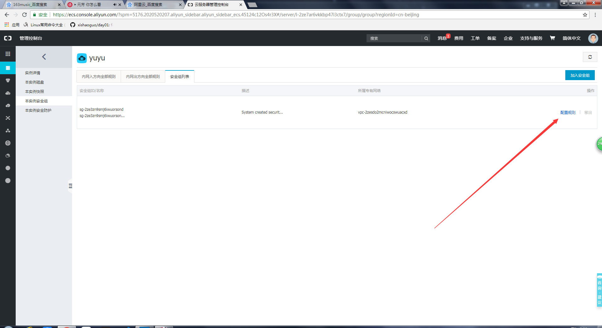

阿里云服务器centos配置nginx流程
1. 登录阿里云，进入服务器的控制面板界面
2. 点击远程连接，输入运程连接密码，进入linux界面（也可以使用自己的电脑直接远程连接控制，如果自己的电脑是linux或mac，可以在终端使用ssh命令连接，如：ssh root@192.168.0.1）
3. 输入用户名root，输入密码（如果忘记可以重置，但重置后要重启服务器）
4. 登录nginx.org
5. 右键，复制链接地址
6. 进入终端界面，创建一个安装目录，如：nginxinstall,使用命令：mkdir nginx创建目录
7. 查看系统中是否有wget命令：wget -help，如果没有wget命令，就使用：yum install wget安装wget命令。
8. 运行命令wget,将刚才复制的链接写在wget后面：wget http://nginx.org/download/nginx-1.14.1.tar.gz
9. 使用tar zxvf 下载好的压缩名 命令来解压刚才下载好的压缩包
10. 进入到解压后的目录，查看目录里面的文件，找到configure文件。
11. 执行这个文件，使用: ./文件名 执行完后会生成一个Markfile文件
12. 直接输入命令:make 编辑这个文件,做这一步的时候出现了一个错误
解决办法是重新./configure,估计是刚才没有生成好，或者是需要重新编辑一下。
13. 编辑完Makefile文件后会生成一个objs目录，执行make install，就会将编辑好的Makefile文件安装到系统中，安装的目录是:/usr/local/nginx
14. cd /usr/local/nginx进入到这个目录，ls 我们会发现里面有一个sbin目录我们的nginx就在这个目录里面,cd sbin ，ls 会发现里面有一个nginx文件。 ./nginx执行这个文件，这个时候nginx就执行起来了，我们就可以通过页面访问我们的服务器了。
15. 但是由于第一次用阿里云服务器，所以遇到了一个惨绝人寰的问题，如果是在自己电脑上配置nginx，走到这一步已经可以启动nginx并且访问页面了，但是阿里云服务器还要在管理台开启80端口，这问题折腾了好久......
16. 进入到阿里服务器配置面板

17. 点击确定后，这时在你的浏览器中访问阿里云给你的公网ip就可以看到nginx的欢迎界面。
注意点：
- 登录带有端口号的服务器使用-p 如： root@192.168.0.1 -p 8080